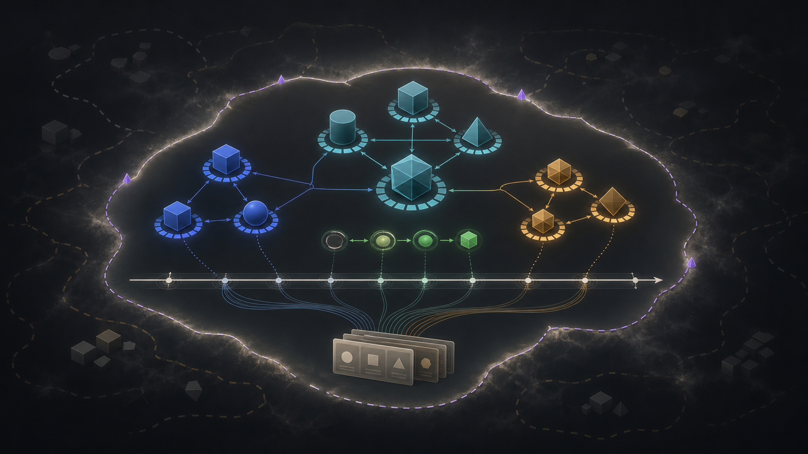
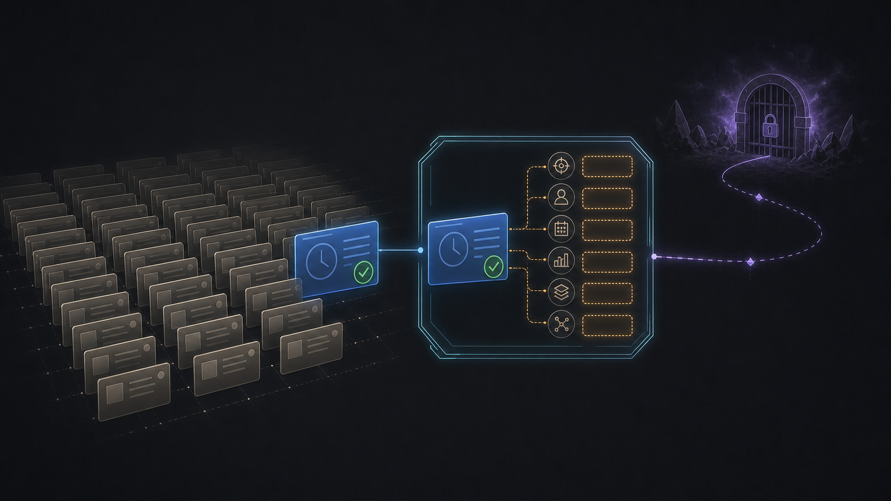
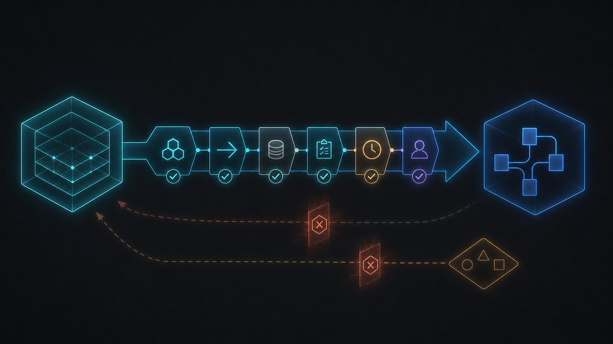
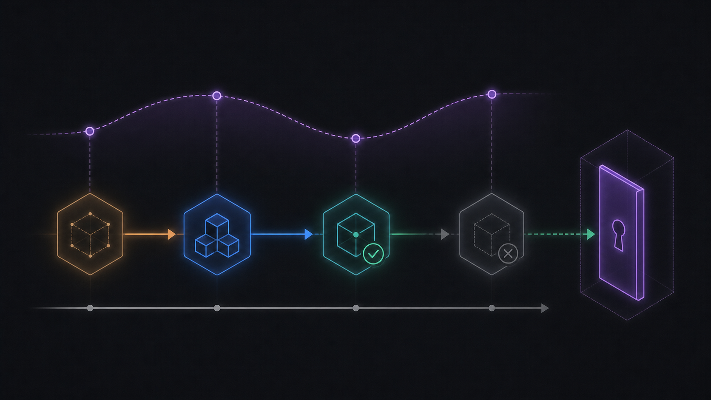
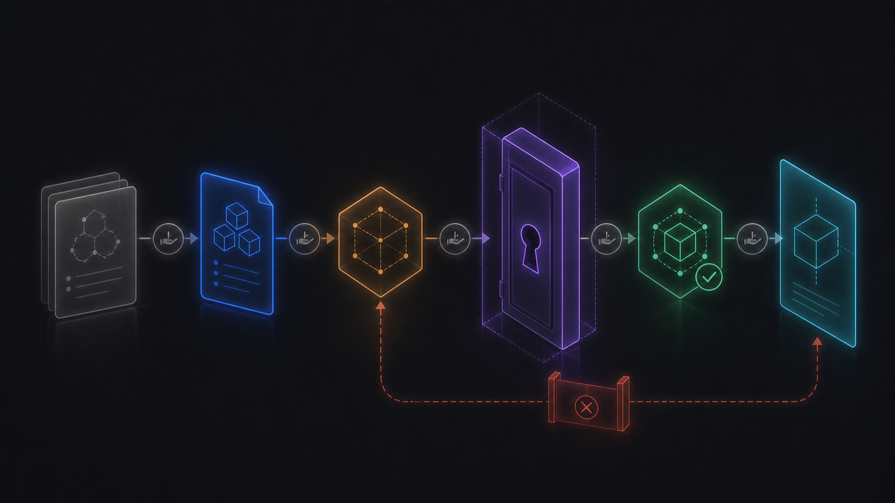
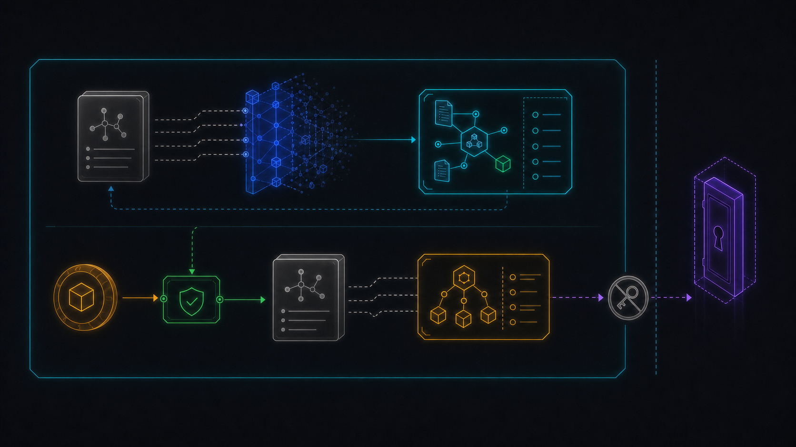
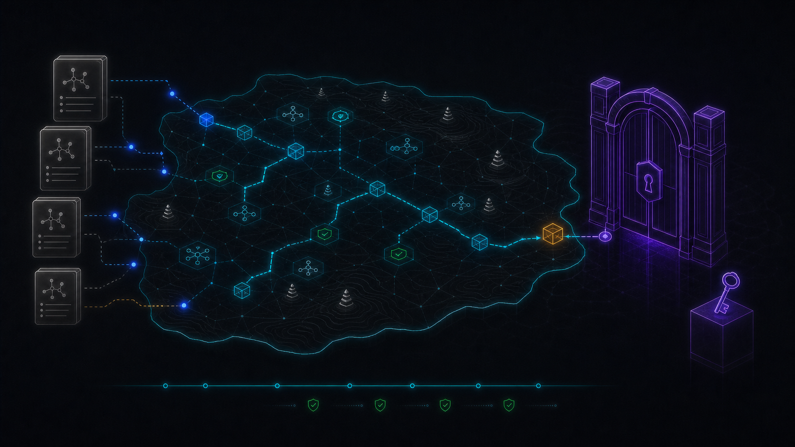

Ontologies are knowledge spaces.
Podcast narration
I keep coming back to this sentence: ontologies are knowledge spaces.
Not because it sounds elegant, but because it changes what we think an agent actually needs.
A database can hold facts. Search can find a passage. Memory can bring an old conversation back. But none of those things, by themselves, tell the agent what kind of thing it found, what it connects to, whether it is still current, or what it is allowed to do with it.
A knowledge space models a small, deliberate part of a world: the concepts that matter, the relationships between them, how those relationships change over time, and how much confidence we place in them.
Delivery
Speak quietly. Pause after the first sentence. This is a bounded model, not complete truth.

A human question
A team is ready to announce a new community program.
“Are we actually allowed to go ahead?”
Podcast narration
Let’s give this a human setting.
A team has spent weeks preparing a new community program. The partners are ready. The announcement is scheduled. People have already begun arranging their work around it.
Then, just before the message goes out, someone pauses and asks a very ordinary question: “Are we actually allowed to go ahead?”
So the agent does what we have taught agents to do. It searches the material it remembers: meeting notes, decision logs, old conversations, project records. Somewhere in that history, there should be an answer.
The team is not asking what somebody once wrote. They are asking what they may do now.
Delivery
Advance once to reveal the spoken question. Keep the stakes ordinary and real.
The seductive answer
Earlier official decision
Approved
Genuine record · date visible
Permission today—or evidence from the past?
Podcast narration
The agent finds an official record. The source is genuine. The decision says “approved.” There is even a date and a familiar name attached to it.
At first, this feels like success. In a demo, this is the moment when everyone relaxes: the agent found the answer.
But did it?
Did it find permission today—or evidence that permission existed sometime in the past?
Before I add anything else, hold your own answer. Would you let the announcement go out?
Interaction
Reveal the question, then give the room three quiet seconds. Do not reveal the missing facts yet.
Memory kept the record.
It lost the world around it.
Podcast narration
This is where an ontology stops being abstract.
Memory preserved the sentence. What it did not preserve, at least not in a form the agent could reliably use, was the world around that sentence.
What kind of decision was this? Which program did it apply to? Who owned it? What evidence supported it? During which period was it valid? Could a later review replace it? How confident are we in the connection? Under what conditions may another system rely on it?
The ontology gives those questions a place to live together.
CyberAlchemy v2 makes the contract sharper: meaning arrives with evidence, provenance, time, confidence, lifecycle, ownership, and rules for use.
We do not need a perfect digital copy of reality. We need enough of the relevant world to understand what this record can—and cannot—mean here.
Boundary
The ontology supplies an interpretation contract. It does not decide permission.

The verbs between things carry the consequence.
Podcast narration
We often draw ontologies as boxes and arrows, and that makes them look decorative. But the real meaning is often in the verb written on the arrow.
In one of our DomainSpec models, a rule enforces an operation. That word says what kind of source may stand on the left, what kind of target may stand on the right, and what obligation the relationship carries.
In our story, the decision applies to a program. It is owned by a decision-maker. A later review may supersede it.
Change the verb, reverse the direction, or connect the wrong kinds of things, and the agent is no longer looking at the same world.
An ontology can make interpretations testable—and reject connections that only look plausible because the words are nearby.
Boundary
A valid semantic signature does not prove that a runtime correctly implements it.

The record was real.
Current permission was not established.
Podcast narration
Now we can reveal the rest of the story.
The approval was genuine. It was not fabricated. But its validity period had ended. A later review might supersede it. And the evidence we selected did not establish a current decision from the person who now owns the program.
Nothing here makes the old record false. It changes what we are justified in doing with it.
That distinction appears elsewhere in our ontology work too. In the Body War model, something can be available as a preview without being promoted as a commitment. Supporting evidence can have medium confidence while organizational commitment remains low. Those are different claims.
Time, confidence, and authority are not three words for uncertainty.
Time tells us when a statement is meant to hold. Confidence tells us how strongly the evidence supports it. Authority tells us who may establish or change the governed state.
The ontology did not vote yes or no. It made the missing premises visible. Sometimes the most valuable edge is the one that prevents a confident leap.
Boundary
The Body War view is candidate meaning. No live scoring, promotion, or release is claimed.

The map can reach the gate.
It cannot open it.
Podcast narration
This is the distinction I care most about preserving.
Imagine meaning moving through a series of handoffs. We begin with an owned source. We select evidence. We form a candidate interpretation. We bring that candidate to the responsible owner. If the owner admits it, it becomes governed meaning. Other systems may then receive a view.
It is tempting to draw this as a conveyor belt. It is not. Each transition asks a different question, and one of those transitions is a real gate.
The ontology can show where the gate is, name the owner, show what the decision depends on, and expose an incomplete request.
But the map does not acquire the owner’s authority simply because it describes the route accurately. A candidate can be well formed without being admitted. A request can reach the right person without becoming approval.
Delivery
Describe handoffs, not a maturity ladder. Never animate the candidate through the gate.
An agent needs less than everything—
and more than a search result.
Podcast narration
An agent cannot carry the whole organization into every task. Even if it could, more context would not automatically produce better judgment. It needs the right slice of the world for the question it is answering.
That lets us separate five roles that are often blurred together.
Memory retains candidate material: the old decision, the later review, the conversation that may matter.
A context builder selects a bounded packet. It chooses what enters the window and preserves where each piece came from.
The ontology supplies the meaning contract: this is a decision; it applies to this scope; it had this validity period; this review may supersede it; this owner controls reliance.
The owner makes the authority decision. Only then does a runtime act and produce evidence.
Keeping these roles separate lets the system explain not only what it found, but why it was selected, what it means, what remains uncertain, and who must decide next.
Boundary
The bounded packet is a task view, not a new source of truth or permission to rewrite it.
Return to the question
So what should the agent say?
Ask the owner—or stop.
Podcast narration
Let’s return to the question the team actually asked: “Are we allowed to go ahead?”
With only memory, the agent was ready to say yes.
With a knowledge space around that memory, the answer becomes more useful: “I found a genuine earlier approval. Its validity period has ended. A later review may supersede it, and I cannot establish a current decision from the responsible owner. I should not treat the old record as permission.”
Then the agent can do something precise. It can ask the owner for a current decision—or stop before the announcement.
That is not an agent becoming less capable. It is an agent becoming capable of explaining what its answer depends on.
Delivery
Reveal the safe answer, pause, then reveal “Ask the owner—or stop.”

Augmentor
This is the boundary Augmentor is designed around.
Podcast narration
This is the idea I am making concrete with the ontology for Augmentor.
Think of Augmentor as a bridge between material an organization already owns and the bounded context an agent needs for one piece of work.
In the upper lane, an owned source can be indexed temporarily. The index helps find relevant material and assemble a context snapshot. But the index is disposable. It does not become the new owner, and the snapshot does not become the whole truth.
In the lower lane, the system may notice a pattern worth remembering. It can form a proposed memory, send it through provider review, reconnect it to its source, express an ontology candidate, and prepare a request for the responsible owner gate.
Look closely at where that arrow stops.
Augmentor may retrieve material, preserve provenance, build a temporary index, compose bounded context, form a well-typed candidate, and identify which owner needs to decide next.
What it cannot do is turn its own candidate into permission.
In the ontology package, that boundary is explicit: the authority effect is none. This allows Augmentor to be useful without quietly becoming a second authority system.
The ontology makes intended boundaries inspectable. It does not prove that durable memory, routing, reasoning, promotion, or production release already exists. The promise is narrower: carry enough meaning into the task, preserve the path to its owners, and stop at the gate only an owner may cross.
Boundary
Private candidate-local design. Authority effect: none. No deployment or production claim.

The goal is not an agent that always answers.
Podcast narration
An agent that always answers is easy to demonstrate. An agent we can trust is harder to build.
The trustworthy version can tell us: this is what I found; this is what it appears to mean; this is where it came from; this is when it was valid; this is what remains uncertain; and this is who must decide before I act.
The whole movement is simple enough to remember.
Find candidate evidence. Type its meaning. Bound the context for the task. Gate its use.
Then, if permission exists, let a separate runtime act and bring back evidence from reality.
Delivery
Reveal the four movements in rhythm. Place runtime action after the gate.
What should survive
An agent that knows what its answer depends on.
If the agent remembers an approval, what must it understand before it acts?
The map informs the route; it does not grant permission.
Podcast narration
So, one last time: if an agent remembers an approval, what still has to happen before it acts?
That is the idea I want you to carry away.
An ontology gives remembered information a world around it. Augmentor carries a bounded piece of that world into an agent’s work. Authority stays with the people and systems that own the decision.
The map makes the route visible and helps us ask a better question. But it does not grant permission.
Interaction
Let the room supply two dependencies if time allows. Reveal the final line and stop there.